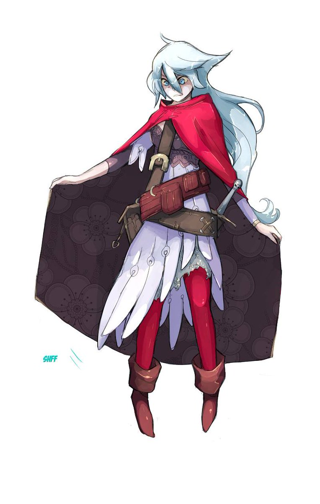

Hi, It's Kelsey
I'm a
Welcome to my personal website! I'm excited to share my journey,
experiences, and aspirations with you.
Hire me
Education
This section highlights my academic background and the institutions that
helped shape my knowledge. My educational journey began at Santa Rita
College and Dominican School, two establishments that were crucial in
shaping my academic foundation, morals, and perspective on education. I
learned discipline, curiosity, and the importance of striving for
excellence no matter how challenging the path may be from these schools.
In addition to the lessons I've learned in school, my learning path has
always focused on understanding my surroundings and discovering who I
am. Every subject I studied, every challenge I faced, and every success
I attained contributed to my growth. I believe that education is a
lifetime commitment—a commitment to always learn, grow, and become a
better version of myself every day.
Experience
My work experience, projects, and activities that contributed to my
personal development. "Instead of teamwork, a lot of my development has
come from innumerable moments of trial and error—trying new things,
failing, fixing, and trying again. These experiences taught me patience,
resilience, and the importance of persevering even when the answer isn't
immediately obvious. Every setback turned into a lesson, and every
accomplishment into a reminder that with hard work, progress is
achievable. Through these experiences, I learned how to adapt, stay
persistent, and trust the process of getting better over time."
Goals
My long-term and short-term personal and professional goals. "My goals
push me to step out of my comfort zone, challenge my limits, and stay
focused on the journey toward becoming someone capable of making
meaningful contributions. My goals represent the future I aspire to
build for myself. I want to continue improving my skills, gaining
experience, and finding confidence in my craft. One of my biggest dreams
is to create something special—something uniquely mine—that I can share
with others. Whether it's a project, a story, or a creative work, I want
it to inspire others the way I have been inspired."
Focus
The key skills and areas I'm currently building and improving. "I'm
learning to understand my own pace, recognize my strengths, work on my
weaknesses, and stay committed to steady improvement. By focusing on
consistency, discipline, and clarity, I'm building the foundations I
need to excel in the things I care about. Every day is a chance to learn
something new, refine my skills, and move a little closer to becoming
the person I want to be." "My current focus is on strengthening the
abilities and habits that will help me reach my long-term vision."
Inspiration
People, ideas, and experiences that inspire me. "My inspiration comes
from the things that sparked my curiosity and creativity from the very
beginning—Art, the fascinating process of making video games, and the
sincere encouragement of the people around me," the statement reads.
"Art showed me how powerful expression can be, and video games opened my
eyes to the incredible worlds people can build through imagination and
effort, and the support from the people close to me gave me the
confidence to follow this path," the statement reads.
